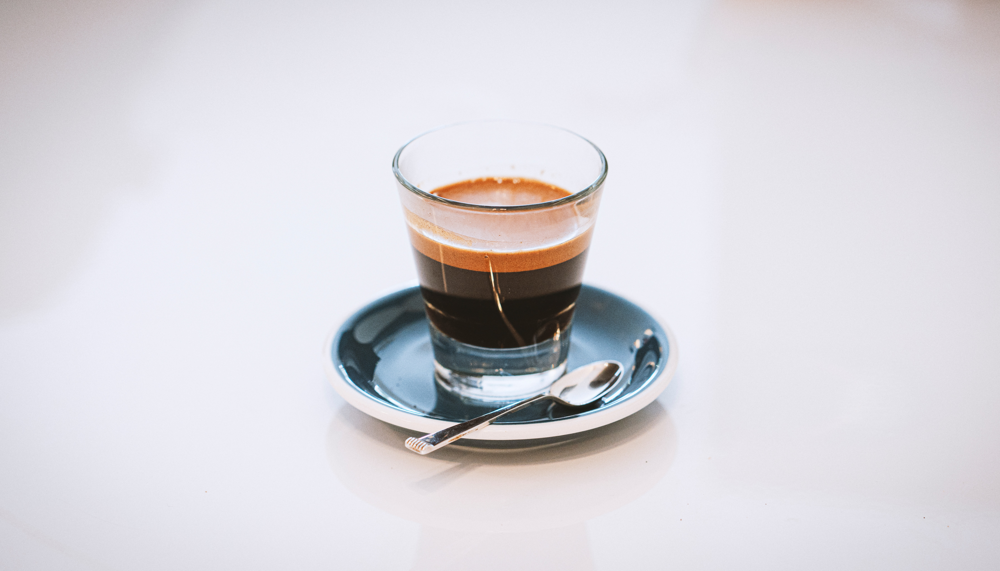

coffee beans are used to make espresso they're more finely ground, and they're brewed with a higher grounds-to-water ratio than what's used for coffee. The result is a thicker, more concentrated liquid with a bolder flavor. A single espresso is a one-ounce shot.Although simple in appearance.
